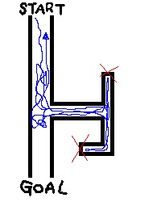
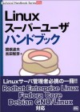

 俺、多分こんな迷路でも迷うと思う。
たかが梅田なんだけどねぇ…。
方向感覚とか時間間隔とか、動物としてやばくなってきていると思う最近の俺。
風邪ひいてる2日程、煙草を吸わなかったんですね。
そしたらなんか、体質が変わったっつーか、正常に戻ったっつーか。
身体がニコチンを欲しがらなくなってしまいました。
実際、試しに吸ってみても全然おいしくない。
ってゆーか心臓とかすっげードキドキしだす。
えー、一酸化炭素吸って血中酸素が少なくなるからその分血液を沢山送り出す身体の自衛反応って奴ですかね。
で、今後も禁煙活動をしていくのかって聞かれても、そんな事しないと思います（ぇ
別に本気で辞めたいわけじゃあないですからね。単に吸いたくないから吸ってないだけであるわけで。
えー、暇だからちょいと一服…ってのをちょいと自制する程度でしょうか。
あーそうだ、自制を長続きさせるコツを発見しましたよ。
「俺は禁煙するぞ！！１」とか言いながら煙草をゴミ箱に捨てる人っているじゃないですか。
でもそーゆー事すると、後になって惜しくなったり、後悔する事が多いと思うんです。
で、買おうか、いや、俺は辞めるんだ、あーでも吸いたい、あーちきしょう、大体なんで我慢なんてしなきゃなんねーんだ、誰かに禁止されてるわけでも無し、っつーか二十歳越えてるんだし、責任持って自分(てめぇ)の金と命削って吸ってきたんだから、今更(ry
と、まーいらん葛藤が起こって余計イライラすることも多くなると思うんです。
だから、ね。
煙草を一箱買って常に持って歩くんです。
むしろ内ポケとかに入れといていつでも吸える状態にしとくのです。
で、ちょいと煙草を控えるぞ的な決まりを作って、日々を過ごすとあら不思議
なんか苦痛じゃなくなります。
飯食った後によし一服と煙草に手を伸ばしても、「あーまあやめとくか」と。
でもなんかめｃっちゃむかつく事があってどうしても吸わなきゃやってられん(`д´)
って時は吸っちゃいます(何
でも何回も自制を続けてると、なーんかおいしく無くなってるんだよね。
もしかしたら俺だけなのかもしれんが、お試しアレ
ｵﾜﾙ
風邪ひいてました。復活しました。
あー、新しいパソコンを買いました。
親父専用。
専用ってだけあってめっちゃ高性能です。
CPU:2.8GHz
Mem:1024MB
HDD:160GB
etc...
うん、セットアップとか管理は当然俺がするわけで。
よし、新しい玩具を手に入れた。
俺の日課はWindowsとかDebianをいじりながらうぇうぇ言う日々、、、なんですが、ここ二、三日はあんまりパソコンをいじってませんでした。
なんでかっつーと…これが原因です。
おッさん！おっさん！(*ﾟ∀ﾟ)=3
そうです。モンスターハンター２を買っちゃったのですよ。
スナに色々教わって、どーにかこーにかMH1もクリア出来た事ですし。
えっと、その、、、なんか我慢出来なくなっちゃったんですよ(何
相変わらず完成度高いですねぇ。やりこみ要素も増えたっぽいし、長く遊べそうですわｂ
キャラクターメイクでは、今までずっとやってみたかったおっさんキャラを作成。
とても渋くて素敵ですよ、、、(*´д`)
さあ、みんなの自キャラを晒してくれい！(何
えー、昨日は見苦しいもん見せてしまって申し訳ないです。
よくこんなの公開するなと自分でも思う。
やりたい放題かよってね。
えー、現在適当に改良中。いや、良くなるかどうかはわからんけどね。
今月の本に対する出費がすげーことになってます。
五月だけで、、、15,000円ちょい？うひゃぁ
まーでも、無駄使いじゃないからいいんです。
いいんですっ！
最近Debian GNU/Linuxをいじる時間が多いってゆー事は何度も、あほの様に繰り返し言ってきたけど
ただ漠然といじっててもわからない事は多数あるわけで。ってか次から次へと出てくるわけで。
最近だとiptableの記述法とかサービス起動スクリプトの設定法がわからなくってWEBで調べまくってるわけですが、ドキュメントが古すぎたりDebianじゃなくてFedoraCoreでの方法だったりで散々な結果に終わる事がしばしば。
まー全然仕組みが違うってわけじゃあ無いからどーとでも読み変えれば大丈夫だったりするんだけど、ちゃんとドキュメントが見つかったりする事もあるんだけど、なんか気持ち悪い。
こう、頭の中にかかっている霞がスパッと晴れるような理解を得たいわけですよ、俺は。
WEB上のデータが、いつまでも残っているとは限らないわけだし、どうせ得るならきちんとした情報を手に入れたい。
そんで自分の物にしたい。
まーそう思うわけですよ。
で、で、今回手に入れたのはこの一冊。
元々こっちを買うつもりで本屋にいたんですけど、他にはなんかいい本無いかなーって棚を物色してたんですね。
そして偶然見つけたのが、上記の本。
なんつーかもーたまらん内容ですよ、これ。
「そうなのよー知りたかったのはこれなのよー正にコレなのよーー。゜゜(ﾉ□｀｡)°゜。」
と、こんな気分。
痒いところに手が届きまくりで快感でっせ！
この本の素敵なところは、Debian系の設定法と、Redhat系の設定を分けて記述してあるところ。
Debian系だったら #rcconf、Redhat系だったら #ntsysv、、、とかね。だからRedhat系の所は読み飛ばせる。
で、今回気付いた俺の性格。
なんで俺はこんなに本ばっかし買うのか？
それは、知りたいときにぱっと調べられない事に我慢が出来ないからなんだと。
少しでも関心を持った内容は、まず本を読んで正確な知識を得てからじゃないとスタート出来ない子なんだと。
そして例えスタートしたとしても、油断してたら片っ端から忘れてしまうからなんだと。
正確な知識を得たがる性格なのにすっげーいい加減な性格、加えて病的なずぼら、怠け癖。
そして単なるLinux厨。
いったい俺は何者なんだ。
うっわ、キモイ
なんだこれ
えー、Flash修行中だって事でどうかひとつ＿|￣|○
今日バイト中、ふと、車から顔を出す小さい子供と目が合ったんですね。
で、無視するのもあれかなーとか、手ぇ降ろうかなーとか考えてたら
その子の方から手を振ってきたんですね。しかも満面の笑みで(*´д`)
で、俺も満面の笑みで振り返したんです。
その子、お互いが見えなくなるまで手ぇ振ってくれてるんですね。
((((((((((((ヾ(･∀･ )ブンブンブンブンブンブンって。
だから俺も( ･ω･)ﾉｼ)))))))))))))ブンブンブンブンって振り返すじゃないですか。
そーなったら向こうもテンション上がって更に振るでしょ、そしたらそれに対して俺も振り返すでしょ、でもその子は更に更にお返しと言わんばかりに手を振るわけです。
Baby:((((((((((((ヾ(･∀･*)ブンブンブンブンブンブン
TEVA:( ﾟ∀ﾟ)ﾉｼ))))))))))))ブンブンブンブンブンブン
Baby:((((((((((((ヾ(ﾟ∀ﾟ*)ﾉｼ)))))ブンブンブンブンブンブン
TEVA:(((((ヾ(*ﾟ∀ﾟ)ﾉｼ))))))))))))ブンブンブンブンブンブン
もう止まらない。
その時、俺も注意力が足らなかったんですね。
っつかその子に集中しすぎてたのかもしれません。
いや、どーしたのかって言うとですね、接近する女子中学生の集団に気付かなかったんですわ。
めっちゃ満面の笑みで手を振ってる俺の前を、自転車に乗った女の子達5-6人が通り過ぎていきました。
それも猜疑心丸出しの目をしながら。
お前らに手ぇ振ったんじゃねーよ！
だからそんな目で見ないで！(ﾉд`;) 中学生になんざ興味ねーよ
自動ドアが俺に反応してくれなかった時ー＿|￣|○
がっでむ
面接で落ちてしまいました＿|￣|○
あーちくしょーあそこ行きたかったなぁ。
まーいいや、次だ次。いっくぞーって事で、どうもTEVAです。
えー、最近はずっと、ずーーっとDebianの方に浮気しております。
なんで？ってよく聞かれるんですけど、、、えーと、その、趣味です。
ターミナルが使いやすいのよぉぉ(ﾉд`)
で、そこで何してんの？って話ですが、主に素敵環境作りですな。
快適な日本語入力・表示環境を作ったり、新しいコマンドを覚えてうぇうぇ言ったり、PF-Xのコンテンツ作りとかやっております。
ちょいと新しい事やろうかなと思ったので、そこだけはDebian環境の方がやりやすいのです。
Debianだとパッケージ管理が簡単なんですよーだ。
Winでやりゃーいいじゃんっ！て話ですがね、ええ、そこはほら、俺変態ですから。
使いにくかったり難しい方をわざわざ選択して苦労する男ですから。
うぅむ不器用な奴だと自分でも思う。
でもいいのだ。自分が楽しけりゃいいのだ。
これで学んだ事は絶対どっかで役に立つはずなのよぉぉおヾ(`д´)ﾉ
でもやばいです。
大量の文字列に襲われる夢見ちゃいましたよ、、、(･ω･;)
いや、ソースコード読むのん好きだけどさ、、、